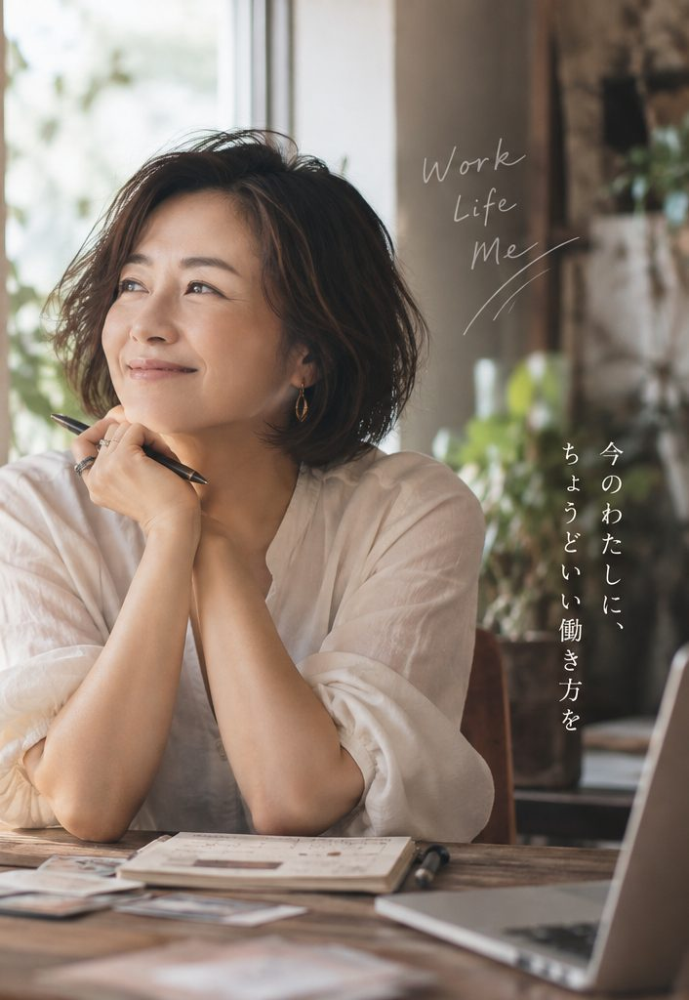

話してみたら、
知らなかった「仕事になる私」が見えてくる。
うまく話さなくて大丈夫。これまで頼まれてきたこと、自然と任されてきたことを少し話してください。
そこから商い星・自分では気づきにくい価値・具体的な仕事案3つを出します。
無料・登録なし。音声はブラウザの音声認識機能を使います。

3つの質問に、声で答えてください。
自由に話すだけではありません。診断に必要な「頼まれたこと」「任された役」「自分では普通だと思うこと」を、順番に必ず聞きます。
自由に話すだけではなく、診断に必要な3つの経験を順番に聞きます。各質問で、実際の場面を1つ以上話してください。
※ 3つの回答がそろうまで診断には進みません。音声認識は端末・ブラウザの機能を利用します。音声処理の方法はブラウザやOSによって異なります。このページからBRIDGE CYCLEへ音声や入力内容を送信することはありません。
話すのが苦手なら、9問から選ぶだけ。
これまで何を任されてきたかを中心に聞きます。結果は、商い星・知らなかった自分・仕事案3つまで。同じところまで見られます。
最近3年で、人から一番感謝されたのは？
Q1 / 9
もし月5万円だけ、自分の力で増やすなら？
Q2 / 9
新しいことを始めるとき、あなたは？
Q3 / 9
これまでの仕事で、職場や役割が変わっても、なぜか任されてきたことは？
Q4 / 9
これまでの仕事で、気づくと引き受けていた役は？
Q5 / 9
休みの日、気づくとやっているのは？
Q6 / 9
「お金をもらう」と考えて、一番しっくりくるのは？
Q7 / 9
失敗したくない気持ちが強いとき、どう動く？
Q8 / 9
10年後、こう呼ばれていたい。
Q9 / 9
いまのところ、
あと5問で、副星とあなたの商いキャラがわかります。
この人のこと、4問だけ教えてください。
名前は要りません。答えは送信されず、結果だけをこの人に送れます。
この人に、頼みがちなのは？
この人の、すごいところは？
一緒に何かするなら、任せるのは？
この人が、お金を取ってもいいと思うことは？
占いとして楽しみながら、結果はあなたが実際に選んだ9つの答えから組み立てています。
「少し違うかも」と思ったら、ほかの型も見る
気になる案を1つ選ぶと、「仕事イメージ・商品・相手・価格・売上目安・今週やること」まで1枚にします。
結果を、もう少し味わう（あるある・他己診断）
自分では「普通」と思っていることほど、周りは頼りにしています。友達に4問だけ答えてもらうと、「友達から見た私」が出ます。
ほかの型も見る
※当たる・外れるの占いではありません。自分を知る入口です。実際に始めるかどうかは、お客さん・値段・お金の話を別に見て決めます。
その商品、まず3人に売れそう？
6問で「誰に売るか・何に困っているか・いくらか・自分が続けられるか・3人に声をかけられるか」を確認します。
その商品に、お金を払ってくれそうな人が具体的に浮かぶ？
Q1 / 6
その人が「なぜ買うか」を、その人の言葉で説明できる？
Q2 / 6
その困りごとに、今すでにお金を払っているものはある？
Q3 / 6
「いくらで売るか」を、今すぐ言える？
Q4 / 6
その価格で売れたとして、自分も続けたいと思える？
Q5 / 6
今月、3人に「有料で」試してもらえる？
Q6 / 6
※「売れる／売れない」を保証する診断ではありません。今の仮説で不足している確認項目を見つけるチェックです。
今週、どこまで動けそう？
買う人・有料経験・使える時間を4問で確認します。占いでは、この現在地を「商いの季節」と呼びます。
「人に頼まれること」を、3つ言える？
それに、お金を払ってくれそうな人の顔が浮かぶ？
自分の商品やサービスで、お金をもらったことは？
週に5時間、自分のために使えそう？
商いの季節は固定ではありません。売ってみた・時間が取れた・お客さんが見えたら変わります。1か月後に、また確認してください。
45分では、ここまでの結果を最初から説明し直さず、この続きから「商品・価格・最初の5人・週の時間・90日」を1枚にします。
無料で仮説まで。
45分で「誰に・何を・いくらで」を決める。
無料診断の結果をそのまま使うので、最初から説明し直す必要はありません。
無料で、ここまで出ます
- まだ未定なら：商い星・職業イメージ・商いプラン3案
- 売りたいものがあるなら：顧客・価格・有料テストをチェック
- どちらの入口でも：今週どこまで動けるか
- 今週、何を1つ確かめるか
45分で、ここまで決めます
- 売る商品を1つに絞る
- 無理のない価格を決める
- 月3万・5万円に必要な人数を出す
- 最初に声をかける5人を決める
- 週に使う時間を決める
- 必要なら、家族との時間・家計から出せる上限も確認する
- 90日後の続ける／やめる基準を決める
オンライン（Zoom）または大津市内で対面。1枚の「わたしの商いカルテ」にして持ち帰ります。
創業相談はBRIDGE CYCLE株式会社（認定経営革新等支援機関）が担当。占いで起業判断はしません。
診断のしくみを知りたい方へ
予約前によくある質問
40代からって、遅くない？
遅くありません。20年分の経験と、人のつながりと、生活者の目。この3つは、20代にはないものです。そのかわり、大きく賭けず小さく試します。
やりたいことが、まだ決まっていなくても？
大丈夫。むしろその段階の人のための診断です。資格を探す前に、「頼まれてきたこと」を一緒に書き出します。
占いで「向いてない」と言われる？
言いません。占いは自分を知る材料。始めるかどうかは、お客さん・値段・お金の話で決めます。
会社員・パートのままでも？
そのままで。辞めずに試す方法（副業・週末・予約制）から一緒に考えます。
あとで高い契約をすすめられない？
ありません。診断だけで終われます。必要な人にだけ、次の選択肢をお伝えします。
45分診断を、予約する
2分で終わります。折り返しは1営業日以内に、メールで日程をご相談します。お支払い方法も、そのメールでご案内します（事前決済は不要です）。